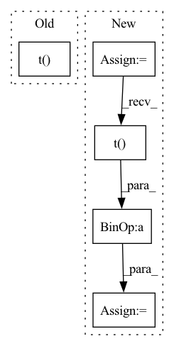

Pattern ID :6842
Before Change
dist_mat = torch.cdist(x, x, p=2)
bond_buckets = torch.bucketize(dist_mat, cutoffs)
// find atoms inside different thresholds - avoid same atom (dist = 0)
whole_bond_idxs = ( bond_buckets < len(cutoffs) ).triu(diagonal=1).nonzero().t()
// 2. encode bond -> attrs
bond_vecs = x[ whole_bond_idxs[0] ] - x[ whole_bond_idxs[1] ]
bond_norms = torch.norm(bond_vecs, dim=-1, keepdim=True)After Change
bond_buckets = torch.bucketize(dist_mat, cutoffs)
// assign native bonds the extra token - don"t repeat them
bond_buckets[native_bond_idxs[0], native_bond_idxs[1]] = cutoffs.shape[0]
bond_buckets[native_bond_idxs[1], native_bond_idxs[0]] = cutoffs.shape[0]
// find the indexes - symmetric and we dont want the diag
close_bond_idxs = ( bond_buckets < len(cutoffs) ).triu(diagonal=1)
close_bond_idxs = ( close_bond_idxs + close_bond_idxs.t() ).nonzero().t()
// merge all bonds
whole_bond_idxs = torch.cat([native_bond_idxs, close_bond_idxs], dim=-1)
// 2. ATTRS: encode bond -> attrs
bond_vecs = x[ whole_bond_idxs[0] ] - x[ whole_bond_idxs[1] ]In pattern: SUPERPATTERN
Frequency: 4
Non-data size: 5
Instances Fragment ID: 23213862
Project Name: lucidrains/geometric-vector-perceptron
Commit Name: 785f2d4ef5133a5d979ee3c8c5105eb9cc2bd574
Time: 2021-02-27
Author: ericalcaide1@gmail.com
File Name: examples/data_utils.py
M Class Name: AnonimousClass
N Class Name: AnonimousClass
M Method Name: encode_whole_bonds(5)
N Method Name: encode_whole_bonds(5)
M Parent Class:
N Parent Class:
M File Name: examples/data_utils.py
N File Name: examples/data_utils.py
M Start Line: 324
M End Line: 324
N Start Line: 342
N End Line: 355
Before Change
def forward(self, inputs_col, targets_col, inputs_row, targets_row):
n = inputs_col.size(0)
if self.norm:
inputs_col = F.normalize(inputs_col)
inputs_row = F.normalize(inputs_row)
dist = pairwise_euclidean_distance(inputs_col, inputs_row)
// split the positive and negative pairs
pos_mask = targets_col.expand(
targets_row.shape[0], n
).t() == targets_row.expand(n, targets_row.shape[0])
neg_mask = ~pos_mask
// For each anchor, find the hardest positive and negative
dist_ap, dist_an = [], []
for i in range(n):After Change
// hard examples mining
n, m = f.size(0), xbm_f.size(0)
identity_mat = labels.expand(m, n).t() .eq(xbm_labels.expand(n, m)).float()
dist_ap, dist_an = hard_examples_mining(dist_mat, identity_mat)
// Compute ranking hinge loss Fragment ID: 23213844
Project Name: thuml/transfer-learning-library
Commit Name: 0f8f51c4b2fac78edf87e29764e4da3deec6f65f
Time: 2021-10-14
Author: 57670068+tsingcbx99@users.noreply.github.com
File Name: common/vision/models/reid/loss.py
M Class Name: TripletLossXBM
N Class Name: TripletLossXBM
M Method Name: forward(5)
N Method Name: forward(5)
M Parent Class: nn.Module
N Parent Class: nn.Module
M File Name: common/vision/models/reid/loss.py
N File Name: common/vision/models/reid/loss.py
M Start Line: 132
M End Line: 152
N Start Line: 154
N End Line: 162
Before Change
m = fake_features.shape[0]
mean1 = real_features.mean(dim=0)
mean2 = fake_features.mean(dim=0)
diff1 = real_features - mean1
diff2 = fake_features - mean2
cov1 = 1.0 / (n - 1) * diff1.t() .mm(diff1)
cov2 = 1.0 / (m - 1) * diff2.t().mm(diff2)
// compute fidAfter Change
cov_real_num = self.real_features_cov_sum - self.real_features_num_samples * mean_real.t().mm(mean_real)
cov_real = cov_real_num / (self.real_features_num_samples - 1)
cov_fake_num = self.fake_features_cov_sum - self.fake_features_num_samples * mean_fake.t() .mm(mean_fake)
cov_fake = cov_fake_num / (self.fake_features_num_samples - 1)
return _compute_fid(mean_real.squeeze(0), cov_real, mean_fake.squeeze(0), cov_fake).to(self.orig_dtype)
Fragment ID: 23213866
Project Name: pytorchlightning/metrics
Commit Name: bad3607a58cc48367b9b176cb944ccc1b398d391
Time: 2022-09-05
Author: 33259879+nicolas-dufour@users.noreply.github.com
File Name: src/torchmetrics/image/fid.py
M Class Name: FrechetInceptionDistance
N Class Name: FrechetInceptionDistance
M Method Name: compute(1)
N Method Name: compute(1)
M Parent Class: Metric
N Parent Class: Metric
M File Name: src/torchmetrics/image/fid.py
N File Name: src/torchmetrics/image/fid.py
M Start Line: 262
M End Line: 280
N Start Line: 279
N End Line: 286